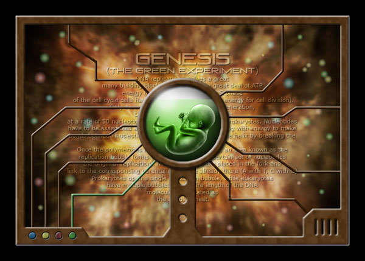
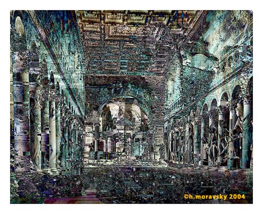
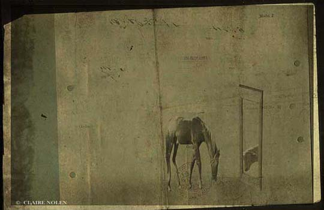
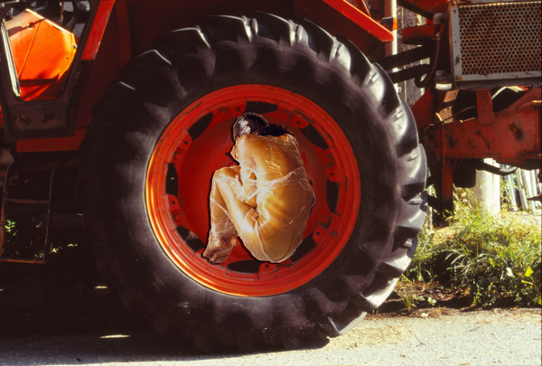
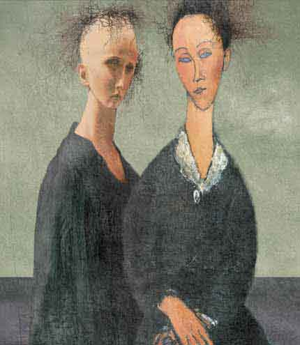
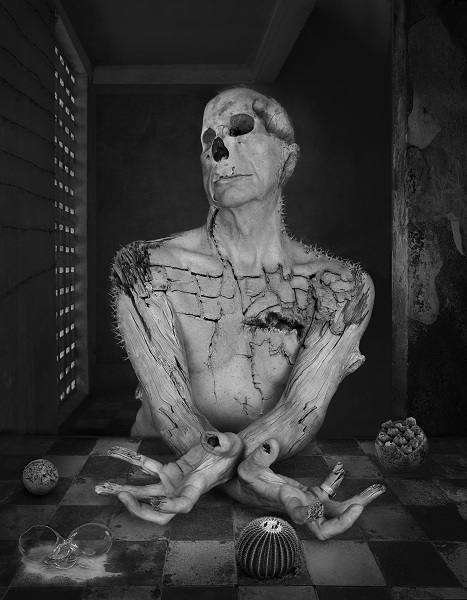
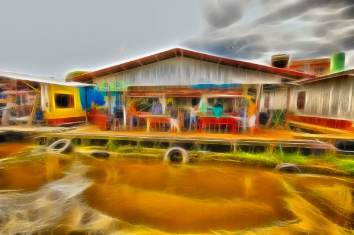
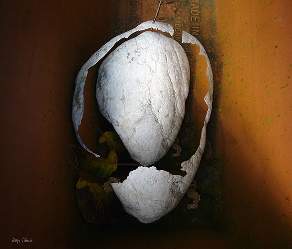

IMAGES OF THE DAY 96
02/11/2024 - 02/20/2024

02/11/2024
Photo-Based
Art via Photoshop
Genesis
by Stefano Menicagli
Click image to access artist's full exhibit
02/12/2024
Photo-Based
Digital Art/Phototography
Fabulous Russella
by Gregoire A. Meyer
Click image to access artist's full exhibit


02/13/2024
Photo-Based
ArtisPictura
The Awakening
by Helen Moravsky
Click image to access artist's full exhibit

02/14/2024
Photo-Based
Surreals
Surprise
by Claire Nolen
Click image to access artist's full exhibit

02/15/2024
Photo-Based
Photography and Mixed Media
Samsara
by Andreina Polo
Click image to access artist's full exhibit
02/16/2024
Photo-Based
Photo Manipulation
Chair of her Mum
by Andrew Polushkin
Click image to access artist's full exhibit


02/17/2024
Photo-Based
Photomontage
No. 007
by Bogdan Prystrom
Click image to access artist's full exhibit

02/18/2024
Photo-Based
Photo Compositions
Ecce Homo
by Dominic Rouse
Click image to access artist's full exhibit

02/19/2024
Photo-Based
Open Gallery
Amazon Scenes
04_DSC0570
by Vermac Santos
Click image to access artist's full exhibit

02/20/2024
Photo-Based
Forms and Colors
Kernel
by Helga Schmitt
Click image to access artist's full exhibit